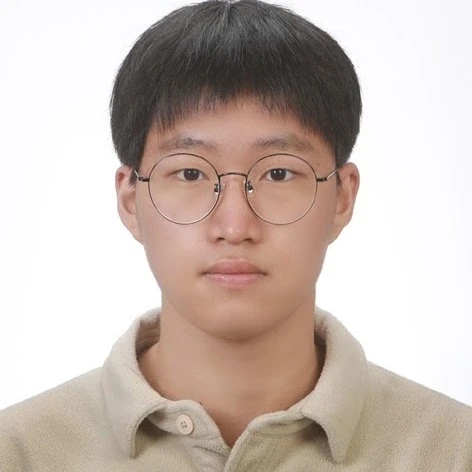
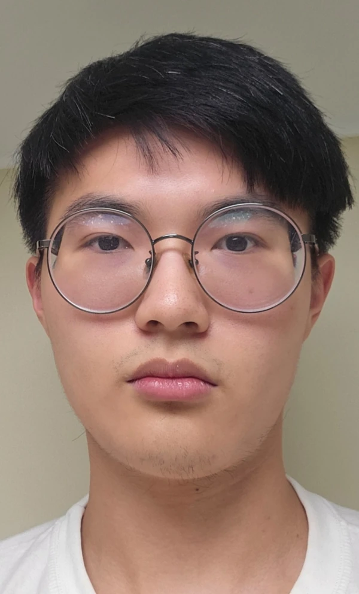

Faculty
FACULTY / GROUP LEAD
Hyunju Kim
Associate Professor
Department of Energy Engineering
Korea Institute of Energy Technology
Hyunju Kim leads DEEP-MATH Lab at KENTECH. The group’s work connects the mathematical analysis of deep learning, physics-informed machine learning, and computational applied mathematics, including isogeometric analysis, generalized finite element methods, and fractional differential equations.
BACKGROUNDPh.D., Mathematics and Statistics · University of North Carolina at Charlotte, 2013
Faculty profile & academic backgroundGroup members
Donghyeok Kim
Undergraduate Researcher
KENTECH · Senior

Hansu Kim
Undergraduate Researcher
Department of Energy Engineering · KENTECH
Research interests
- Neural network initialization theory
- Language model compression and efficiency
- Fractional differential equations
Soobeen Jung
Undergraduate Researcher
Department of Energy Engineering · KENTECH · Senior
Research interests
- Inverse problems
- Physics-informed neural networks (PINNs)

Hwanseo Lee
Undergraduate Student
Department of Energy Engineering · KENTECH · Junior
Research interests
- Fractional derivatives and optimization